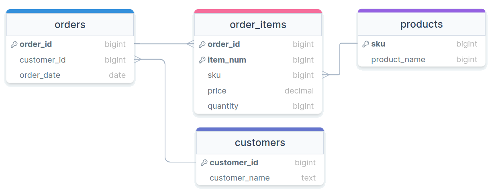

Modeling and Transforming
Jed Rembold
Wednesday, March 1, 2023
Announcements
- Homework 6 is due on Sunday
- Homework 7 should be good to come out by this weekend
- I’ll have a moment to give feedback on the midterms this weekend, but in general I thought everyone did well
- Anyone with PATH issues on running the
psql -f hw6.sqlcommand for the hw? - In class polling: rembold-class.ddns.net
Scripting Prep
- Next week, I want to introduce how to scrape data from websites or API
- Doing so generally requires some sort of scripting language, and I’m aware that not everyone in here as experience with a scripting language (yet)
- What I’m playing around with is something as follows:
- Providing simple scripts in different languages that will scrape a website for tables or access an API at a given URL, and return a JSON structure of the resulting data
- Introduce the functionality Postgres has for natively working with JSON data
- I think this will provide the necessary flexibility for what you’ll need later, as well as introducing something I haven’t covered in the past that I think is quite useful to know
Data Modeling
- Data Modeling is the act of best deciding how to represent and store data such that it relates to the real world
- As much as possible, it is generally desirable to:
- ensure the model can easily help answer the types of questions you will want to ask
- operate at as low a level of granularity as possible
- remove redundancy
- ensure referential integrity
Normalization
- First introduced by Edgar Codd in the early 1970s
- Codd outlined the following goals:
- to free the collection of relations from undesirable insertion, update, and deletion dependencies
- To reduce the need for restructuring the collection of relations as new types of data are introduced
- To make the relational model more informative to users
- To make the collection of relations neutral to what queries are being run on them
- To assist in these efforts, Codd introduced the idea of normal forms
What is normal?
- Each normal form builds on those before
- The primary normal forms are:
- Denormalized
- No normalization. Nested and redundant data is allowed
- First normal form (1NF)
- Each column is unique and has a single value. The table has a unique primary key.
- Second normal form (2NF)
- Partial dependencies are removed (only necessary if compound primary key)
- Third normal form (3NF)
- Each table contains fields only relevant to its primary key, and has no transitive dependencies
Denormalized
- APIs will commonly give denormalized data, since they tend to return JSON type entries
- Consider the entry to the right about a particular order
{ "OrderID": 100,
"OrderItems": [
{
"sku": 1,
"price": 10,
"quantity": 1,
"name": "Thingmajig"
},
{
"sku": 2,
"price": 25,
"quantity": 2,
"name": "Whatchamacalit"
}],
"CustomerID": 5,
"CustomerName": "Jed Rembold",
"OrderDate": "2022-11-09" }Initial Attempt
| OrderID | OrderItems | CustomerID | CustomerName | OrderDate |
|---|---|---|---|---|
| 100 |
|
5 | Jed Rembold | 2022-11-09 |
1st Normal Form
| OrderID | Sku | Price | Quantity | ProductName | CustomerID | CustomerName | OrderDate |
|---|---|---|---|---|---|---|---|
| 100 | 1 | 50 | 1 | Thingmajig | 5 | Jed Rembold | 2022-11-09 |
| 100 | 2 | 25 | 2 | Whatchamacalit | 5 | Jed Rembold | 2022-11-09 |
1st Normal Form (PK)
| OrderID | ItemNum | Sku | Price | Quantity | ProductName | CustomerID | CustomerName | OrderDate |
|---|---|---|---|---|---|---|---|---|
| 100 | 1 | 1 | 50 | 1 | Thingmajig | 5 | Jed Rembold | 2022-11-09 |
| 100 | 2 | 2 | 25 | 2 | Whatchamacalit | 5 | Jed Rembold | 2022-11-09 |
Evaluating 2NF
- To be in second normal form, there can be no partial dependencies, where columns depend on only one of the compound keys
- Here though the last 3 columns all depend only on OrderID
- Solution: Split to new tables!
2nd Normal Form
| OrderID | CustomerID | CustomerName | OrderDate |
|---|---|---|---|
| 100 | 5 | Jed Rembold | 2022-11-09 |
| OrderID | ItemNum | Sku | Price | Quantity | ProductName |
|---|---|---|---|---|---|
| 100 | 1 | 1 | 50 | 1 | Thingmajig |
| 100 | 2 | 2 | 25 | 2 | Whatchamacalit |
Evaluating 3NF
- The third normal form prohibits transitive dependencies, where a column depends on another (that depends on the primary key), instead of depending directly on the primary key
- Here we have 2! One in each table:
ProductNamedepends onSkuCustomerNamedepends onCustomerID
- Solution? More tables!
3rd Normal Form
| Sku | ProductName |
|---|---|
| 1 | Thingmajig |
| 2 | Whatchamacalit |
| CustomerID | CustomerName |
|---|---|
| 5 | Jed Rembold |
| OrderID | ItemNum | Sku | Price | Quantity |
|---|---|---|---|---|
| 100 | 1 | 1 | 50 | 1 |
| 100 | 2 | 2 | 25 | 2 |
| OrderID | CustomerID | OrderDate |
|---|---|---|
| 100 | 5 | 2022-11-09 |
Visually

Beyond
- Other normal forms exist (up to 6NF in the Boyce-Codd system)
- Most people only care about the first 3 to get data in a “normalized” state
- Unless you have specific performance reasons for wanting otherwise, you really should strive for normalized tables in your relational database, as they make maintaining, adding, updating, and adjusting your database and tables much easier
Break Time!

Overview
- Chapter 9 is essentially a tale in two parts, which are closely
entwined
- Data is likely going to be messy. How do you go about cleaning up data for further analysis. What sorts of anomalies should you keep an eye out for?
- Tables are usually not static entities, but stores of data that might be changing. How you can make adjustments not only to the contents of a table but to the design of the table itself?
- We could look at either piece first, but let’s look first at
cleaning data to provide the motivation for altering our tables
- Many of the issues we’ll look at could have been avoided with good use of constraints. But for now we are supposing that the data was generated outside the table, and you have just imported it in naively.
Cleaning: Checking for Duplicates
- We’ve already seen in homework sample sets that there are sometimes duplicate row entries
- Duplicate entries across many columns is usually the sign
GROUP BYandHAVINGcan be very useful here!GROUP BYall the columns that you want to check for repetition- Use
HAVINGto only grab those groups that have more than one element (and thus a repetition)
SELECT col1, col2, col3, col4, COUNT(*) FROM table_name GROUP BY col1, col2, col3, col4 HAVING COUNT(*) > 1;
Cleaning: Checking for Missing
- Data sets can sometimes (often even) be missing data that really should be present
- Fixing this generally requires some knowledge of what the data is representing
- Finding missing values can still tell you important things about the quality of your data though
- A nice way to count the number of nulls in different columns is:
SELECT
COUNT(*) - COUNT(col1) as col1,
COUNT(*) - COUNT(col2) as col2
FROM table_name;Cleaning: Inconsistent Data
- Especially for textual fields, there can be variation in how data is
entered
- Typos happen, or people just refer to the same thing in different ways
- To use
GROUP BYeffectively, you really need categories to be consistently named across the data set - Several possible approaches to identify:
- Scanning over a sorted distinct column for quasi-duplications:
phrases that are just a bit distinct
GROUP BYcould do similar but add counts
- Use pattern matching to look for duplicates matching a single approximate pattern
- Use the fuzzystrmatch module to check Levershtein distances (probably rather slow)
- Scanning over a sorted distinct column for quasi-duplications:
phrases that are just a bit distinct
Cleaning: Checking Text Length
- For certain fields, you’d expect text of a certain number of
characters
- 2 for state abbreviations
- 5 for zip codes
- 13 for isbn13
- Can be a good idea to check these using the
LENGTHstring functionLENGTH(str)just returns the number of characters in said string
SELECT * FROM table_name WHERE LENGTH(col1) != 5;
Damage Control
- It can be a lot of work to clean up a table
- Evaluate whether it is worth it!
- Maybe a better, cleaner data set exists?
- Sometimes, data will be missing that you simply can’t fill in
- Can your analysis work around those columns?
Making Adjustments
- Changing existing tables can generally be broken down into two
categories:
- Changing the structure of the table itself
- Uses keywords
ALTER TABLE
- Uses keywords
- Changing the row content within the table
- Uses keyword
UPDATE
- Uses keyword
- Changing the structure of the table itself

Table Altering: Part 1
ALTER TABLEis generally followed by the table name and then another keyword command, depending on what you want to doALTER TABLE table_name ...Adding columns:
... ADD COLUMN col_name data_type;Removing columns
... DROP COLUMN col_name;
Table Altering: Part 2
ALTER TABLE table_name ...Changing columns
... ALTER COLUMN col_name SET DATA TYPE data_type; ... ALTER COLUMN col_name SET NOT NULL;Renaming columns
... RENAME col_name TO new_col_name;Rename entire table
... RENAME TO new_table_name;
Updating Tables
- If you want to change the values in a particular row (or many rows),
you don’t want to alter the table, you want to
UPDATEit UPDATEsets particular columns to a particular value- BE CAREFUL! If you do not specify which
rows, then ALL of the rows will have that column
changed to that value
- This is partly why having primary keys is so nice: it gives you a method to update just a single row should you need
UPDATE table_name SET col_name = new_value;
- BE CAREFUL! If you do not specify which
rows, then ALL of the rows will have that column
changed to that value
- You can specify which rows should be changed by filtering with
WHERE
Understanding Check
The table named revq to the right is
acted upon by the below SQL queries. What entries in the table are left
untouched once all queries have been run? Each choice corresponds to
those highlighted cells.
ALTER TABLE revq ADD COLUMN col4 INT;
UPDATE revq SET col4 = col2;
UPDATE revq SET (col2,col3)=(col3, col2) WHERE col1 IN ('B','C');
UPDATE revq SET col3 = col3 - col4;
UPDATE revq SET col2 = col2 + col4 WHERE col3 > 10;
ALTER TABLE revq DROP COLUMN col4;Backup Tables
Frequently, if you are about to heavily modify a table, you should consider working on a backup copy
We actually have already seen the basic machinery for this:
CREATE TABLE new_table AS SELECT * FROM og_table;Note: Indexes and constraints are stored separately, and so are NOT copied over using this process!
For including constraints and indexes, you can use a Postgres specific syntax, it the newly created table will initially be missing the data
CREATE TABLE new_table (LIKE og_table INCLUDING ALL);
Table to Table
In some cases, you’ll want to update or pass information across tables
- Maybe one table has newer values that you want to use to update the original table
In core SQL, you’d need to use subqueries, which we’ll be talking about in a few chapters
In Postgres, to update, you can use
FROM:UPDATE table_name1 SET col_name = table_name2.col_name FROM table_name2 WHERE table_name.col1 = table_name2.col1;To insert values from another table into another:
INSERT INTO new_table SELECT * FROM old_table;
Deletions
- Similar to changing tables, removing things from tables has two main
keywords:
DROPfor removing aspects of a table like columns, constraints, indexes, or the table itselfDELETE FROMfor removing rows from tables
DROPwill frequently come after anALTER TABLEunless you are dropping the table itselfDELETE FROMwithout a filter will delete all rows- Make absolutely sure you are using a filter if you don’t want that to happen!
- Another good reason to make up your tables before editing them
Getting Deleted
ALTER TABLE tname DROP COLUMN colname;
ALTER TABLE tname DROP CONSTRAINT const_name;
DROP INDEX index_name;
DROP TABLE tname;
DELETE FROM tname; -- All rows gone!
DELETE FROM tname WHERE condition;- In general, unless you have an important reason, don’t remove actual
data from a table
- You can filter it, you can create new tables that are missing that data, etc.
Transactions
- Atomicity is an important aspect of most database changes
- The idea that related changes should happen in a single, self-contained step
- Many changes you might make to a database have several steps though!
- Need to change one value in one table and another value in another table
- Need to create a new row and then copy some information into it
- Remember that, in general, others can access the database at the
same time
- What if they tried to access the data you were working on mid-operation?
- To solve these issues, SQL has the concept of a transaction
Bundling Up
- A transaction is essentially a bundling of several statements into one, discrete change to the database
- Commands within the transaction have not yet modified the database, but exist only in local memory
- Changes get written to the database all at once upon the conclusion of the transaction
- Starting a transaction?
START TRANSACTION;orBEGIN;
- Ending a transaction?
COMMIT;actually makes the changesROLLBACK;throws out everything within the transaction
Uses of Transactions
- Protecting against system faults
- What if you have a system crash in the middle of an operation?
- What commands had been run? What commands had not?
- Transactions actually write to a log what they are going to do before they actually do it. So in case of a crash, then the transaction can then simply be rerun
- What if you have a system crash in the middle of an operation?
- Protecting against simultaneous access
- Changes occur all at once, so it is impossible for another database user to access data “mid-change”
- Other users of the database will see none of your changes until actually committed
- Testing changes
- Sometimes it is useful to check to see that some changes look the way you wanted before actually changing the database
- Embedding within a transaction block always gives you the option to rollback
Practice Activity
- There is a simple CSV of presidents and debt here
- It has some problems regarding missing, duplicated, or inconsistent
data which you should determine and fix before answering the
following questions:
- What are the top 5 presidents to have the greatest average annual increase in national debt over the years of their presidency?
- How do the median values of annual increases in national debt compare across party lines?
- Trickier: What is the average change in the annual increase percentage of national debt each year over all the years?
Groups
- You’ll be working in pairs, one computer used per group
- Rotate who is typing periodically!
- Pairs:
- Group A: Oscar, Phil, and Frances
- Group B: Alaina and Cristian
- Group C: Jill and Miles
- Group D: Aaryan And Micah
Question Answers
- What are the top 5 presidents to have the greatest average annual
increase in national debt over the years of their presidency?
- Reagan, HW Bush, Ford, Carter, Obama
- How do the median values of annual increases in national debt
compare across party lines?
- Democrats: 3.65%
- Republicans: 7.40%
- Trickier: What is the average change in the annual increase
percentage of national debt overall all the years?
- Only about 0.05%, but seemingly a slight steady increase